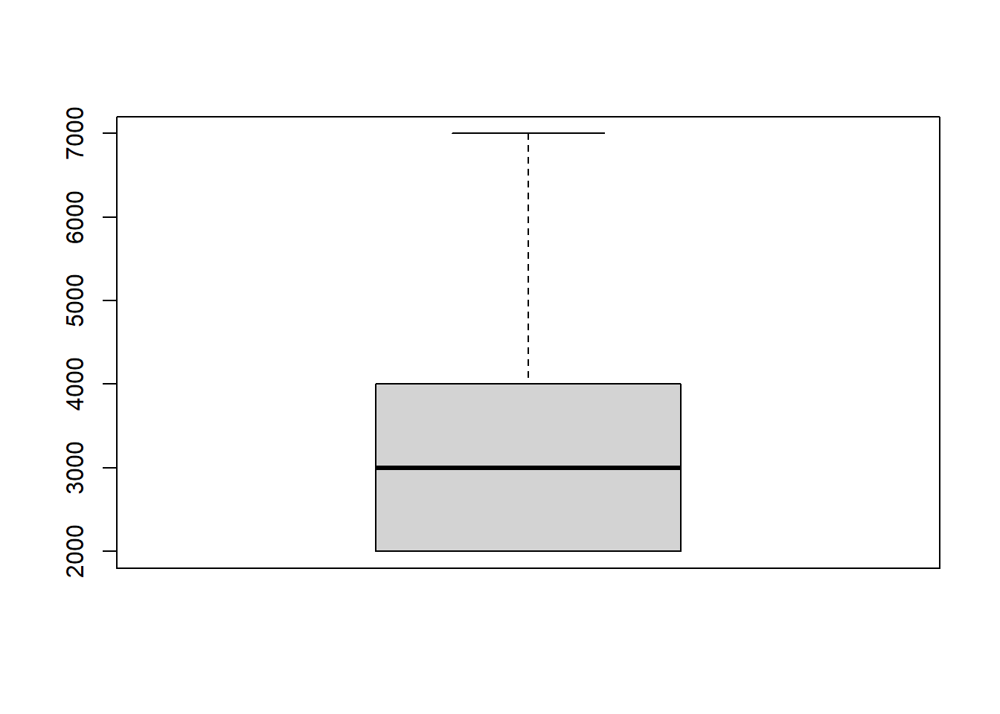
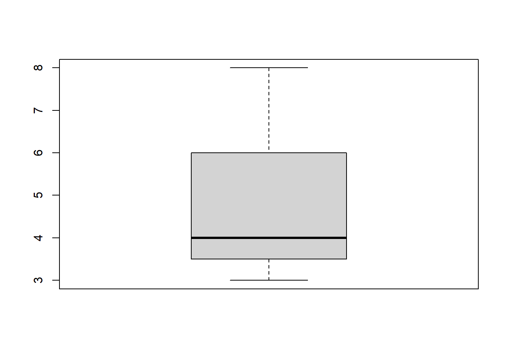
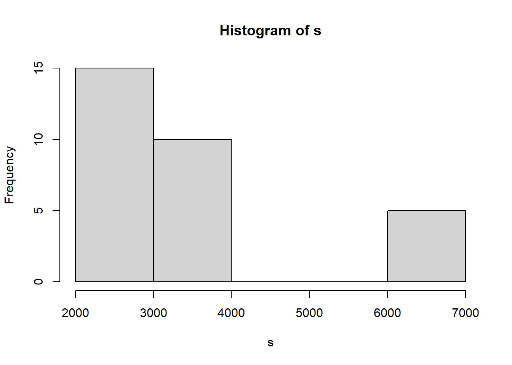
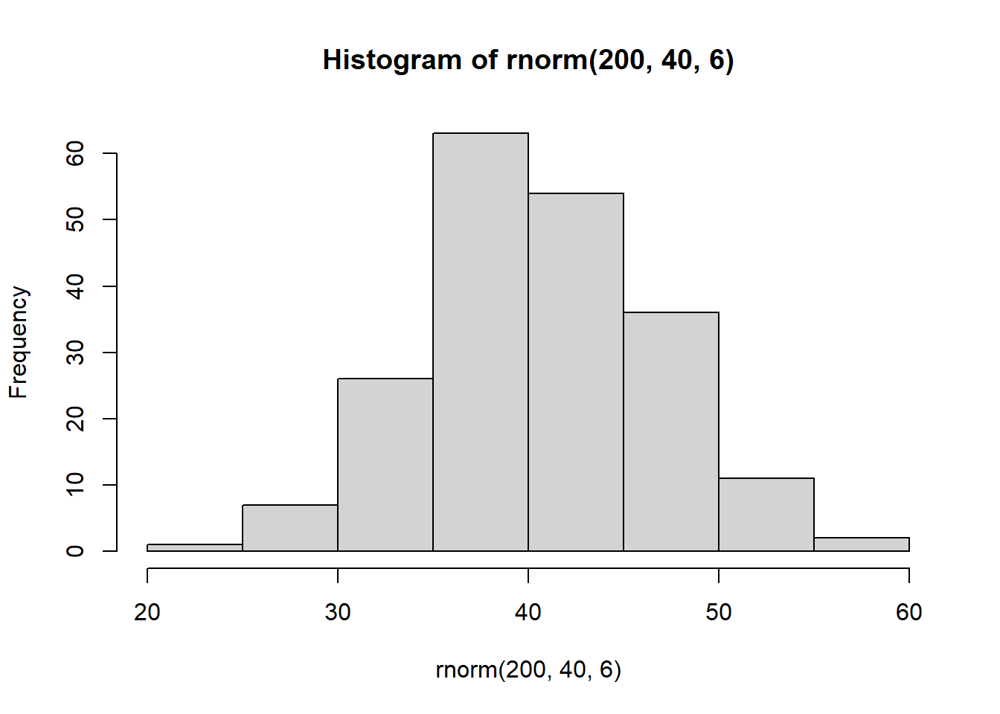
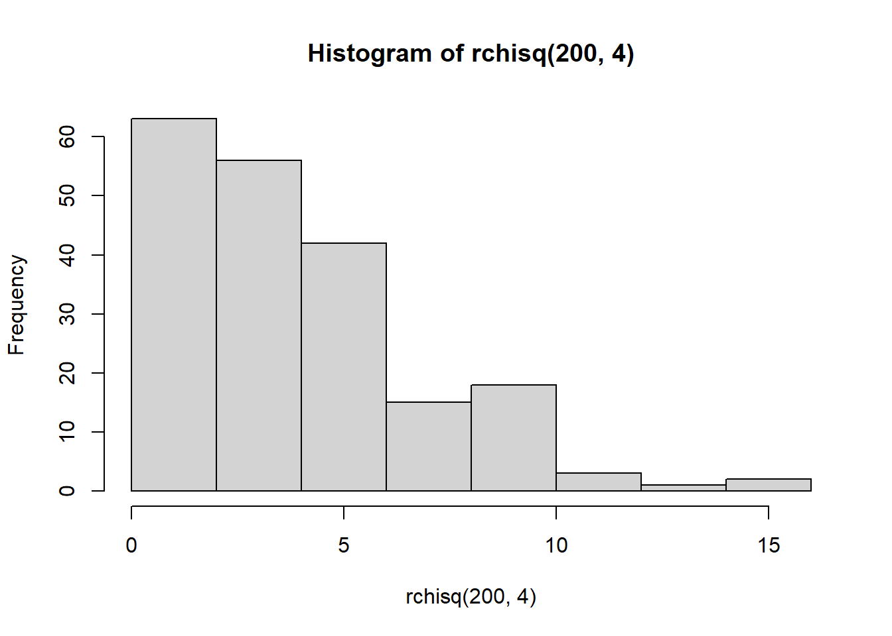
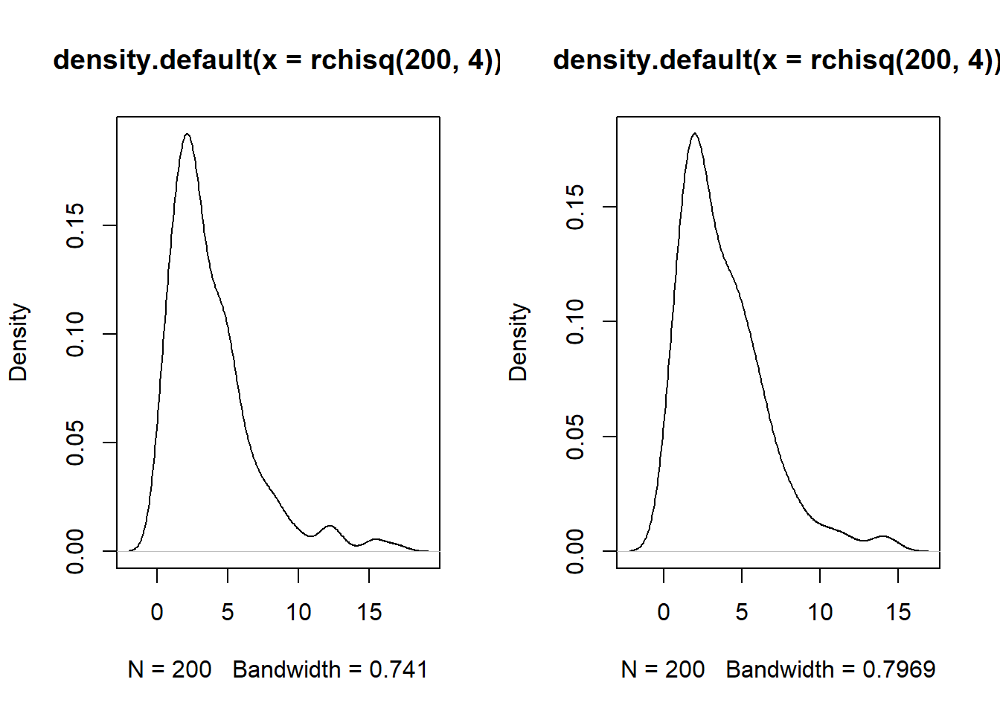

1 Tema 1: Estadística Descriptiva
1.1 Definición de la estadística.
El arte de contar una historia con datos
- La información, los datos, son la fuente primaria para la estadística.
- La estadística cubre los métodos, técnicas detrás de:
- Recolección de información
- Procesar la información (limpieza, depuración, coherencia, etc.)
- Análisis de la información
- Visualización de la información
- Es una ciencia transversal
La estadística es la gramática de las ciencia
La ciencia de datos en el nombre sexy de la estadística
1.2 Historia
- Censo. En la antigüedad se listaba de forma completa una determinada población, con el fin de conocer sus características. (Estadística descriptiva)
- Censos de población y vivienda (2012, 2001, 1992, 1976, etc.)
- Censos de Agropecuario (2013, 1984)
- Censos económicos, unidades económicas de un país o región.
- Muestra e inferencia. El objetivo de esta fase es explicar lo que le sucede a una población a partir de una muestra de ella. (Probabilidad, variables aleatorias).
- Explosión de conocimiento. Nace a partir de la aparición del ordenador. Minería de datos, minería de texto, machine learning, ciencia de datos, big data, etc.
1.2.1 Tarea de repaso.
Buscar los conceptos de:
- Machine learning
- Minería de datos
- Minería de texto
- Estadística multivariante
Buscar que tipo de bases de datos se utilizan en la biología en general y en Bolivia.
1.3 Conceptos importantes
1.3.1 Población
Una colección de objetos/elementos, por ejemplo; personas, cosas, animales, etc.
Sea la población o universo de estudio identificado como \(U\). Debemos distinguir entre las poblaciones finitas y poblaciones infinitas, en este capítulo se trabaja sobre universos finitos.
\[U=\{u_1, u_2, \ldots ,u_i,\ldots, u_N \}\]
Vamos a utilizar la letra \(N\) para referirnos al tamaño del universo.
1.3.2 Muestra
Es un sub conjunto del universo, lo vamos a denotar con \(s\). \(s \subset U\).
\[s=\{u_{(1)}, u_{(2)}, \ldots, u_{(n)} \}\]
Donde \(u_{(i)} \in U\).
Nota: El tamaño del universo o la población sera denotado por \(N\), y \(n\) al tamaño de la muestra.
1.3.3 Variable
Una variable en estadística expresa una característica asociado a algún elemento en la población. Normalmente esta se la denota con \(X\) e \(Y\).
- (\(X\)) Edad
- (\(Y\)) Sexo
- (\(Z\)) Horas de sueño la pasada noche
- (\(W\)) El color de los ojos
- (\(V\)) El número de celular
Las variables asociadas a un elemento en la población, la podemos denotar de la siguiente forma:
\[u_i=\{X_{i1}, X_{i2},\ldots, X_{ip} \}\]
Ejercicio: Definan una población de estudio con sus elementos y listen las variables asociadas a esos elementos
\(U:\) Vegetales verdes
\(U=\{Lechuga, espinaca, brocoli, etc\}\)
Peso, …
Población de estudio: personas en sala de meet de estadística
Unidad/elemento: Personas {Naya, Wara, Vania, etc}
Variables: tienen o no foto de perfil,está su rostro o no, nombre
1.4 Tipos de variables
- Cualitativas
- Cuantitativas
1.4.1 Cualitativos (cualidades)
No se pueden realizar operaciones algebraicas sobre este tipo de variables.
Estas tienen una sub clasificación:
- Nominales: Las categorías de la variable no tienen un orden de jerarquía (el orden no importa)
- Ordinales: Las categorías de la variable tienen un orden de jerarquía (el orden importa)
Ejercicio
De un ejemplo de una variable nominal y una ordinal
Variable nominal= Color de piel.
Variable ordinal= Grado de escolaridad.
Nominal= Colores; rojo, amarillo
Ordinal= Dolor; Leve, moderado
Variables nominales : nacionalidad , boliviana , argentino , brasileño , ecuatoriano …
Variable ordinal medallas , oro , plata , bronce
1.4.2 Cuantitativos (cantidad)
Se pueden realizar operaciones algebraicas de utilidad. Estas se dividen en 3.
- Discretas: Numerables (unidad de medida), ejemplos; edad en años, precio de un televisor en Bs., peso en kilogramos, la altura en cm, la cantidad de personas es un evento.
- Continuas: No numerables; edad de una persona, cualquier variables definida en los números reales. (Volumen, distancia, tiempo)
- Intervalos: Variables que se describen como un rango de números. Por ejemplo; Rangos de edad 0-15, 16-49, 50+, tiempo en horas de un día; 0 a 8:00, 8:01 a 15:00, 15+
Nota: Las variables continuas se pueden volver variables discretas (discretizar una variable)
Tarea:
Definición y diferencia de precisión y exactitud.
1.5 Ordenando los datos
La idea de este punto es conocer las formas en las que se puede manejar las información disponible.
Podemos observar tres formas de ordenar la información proveniente de una sola variable.
Mantenerlos en su forma simple (Datos no ordenados, datos simples).
Tenerlos en una tabla de frecuencias, es una tabla que para cada valor de la variable se realiza un proceso de conteo.
Tener los datos en una tabla de frecuencias con intervalos de clase.
bd<-read.csv("bd.csv")
#simple
bd$Edad## [1] 19 18 18 21 23 18 18 19 20 28 18
## [12] 21 21 18 18 18 17 31 17 17 20 21
## [23] 19 19 22 18 22 17 17 19 20 17 20
## [34] 20 20 19bd$Sexo## [1] "Hombre" "Mujer" "Mujer"
## [4] "Hombre" "Hombre" "Mujer"
## [7] "Mujer" "Mujer" "Mujer"
## [10] "Mujer" "Mujer" "Hombre"
## [13] "Hombre" "Mujer" "Mujer"
## [16] "Mujer" "Mujer" "Mujer"
## [19] "Mujer" "Mujer" "Mujer"
## [22] "Hombre" "Mujer" "Hombre"
## [25] "Hombre" "Mujer" "Hombre"
## [28] "Mujer" "Mujer" "Mujer"
## [31] "Mujer" "Hombre" "Mujer"
## [34] "Mujer" "Mujer" "Hombre"#frecuencia simples
table(bd$Edad)##
## 17 18 19 20 21 22 23 28 31
## 6 9 6 6 4 2 1 1 1table(bd$Sexo)##
## Hombre Mujer
## 11 25#frecuencias por intervalos
#Edad f
#17-19 21
#20-22 12
#23-31 31.6 Frecuencias absolutas, relativas y porcentajes
La frecuencia absoluta se refiere al conteo en las unidades de medida correspondiente, se denota por:
\[f_i\] Estas cumplen:
\[\sum_{i=1}^k f_i=N \quad; \text{En } U\] \[\sum_{i=1}^k f_i=n \quad \text{En } s\] La frecuencia relativa se define como:
\[r_i=\frac{f_i}{N} \quad; \text{en } U\]
\[r_i=\frac{f_i}{n} \quad; \text{en } s\]
Como propiedad:
\[\sum_{i=1}^k r_i=\sum_{i=1}^k \frac{f_i}{N}=\frac{1}{N}\sum_{i=1}^k f_i=\frac{N}{N}=1\] El porcentaje de una frecuencia relativa se define como:
\[\%(i)=r_i\%= r_i*100\]
1.7 Medidas de tendencia central
Imaginemos que tenemos los siguientes números: 2,2,3,3,3,4,4.
1.7.1 Moda (Mo)
La moda es el número que aparece con mas frecuencia en la serie de datos.
En los números descritos la moda es \(Mo=3\). Si la serie de números ahora es: 2,2,2,3,3,3,4,4. ¿Cuál es la moda?, en este caso se tienen 2 modas, el 2 y 3 (bi-modal).
Nota: Si todos los números aparecen la misma cantidad de veces, no hay moda
1.7.2 Mediana (Me)
La mediana corresponde al valor que se encuentra en el centro, de la serie de números ordenados.
Es el número que deja la misma cantidad de información tanto a la derecha como a la izquierda.
En el ejemplo: 2,2,3,3,3,4,4. La mediana es igual a \(Me=3\). Veamos los siguientes ejemplos:
- 9,5,2,6,2,4,8. Ordenando, 2, 2, 4, 5, 6, 8, 9. Así \(Me=5\), \(Mo=2\)
- 4,2,7,7,4,3,2,9. Ordenando, 2, 2, 3, 4, 4, 7, 7, 9. Así \(Me=4\), \(Mo=2,4,7\)
- 1,2,3,4,5,5,5,90. Ordenando, 1, 2, 3, 4, 5, 5, 5, 90. Así \(Me=\frac{4+5}{2}=4.5\), \(Mo=5\).
Para obtener el valor de la mediana se debe tomar el cuenta si la cantidad de datos es impar o par.
Si \(N\) es impar: \[Me= X_{||N/2||+1}\] \[Me= X_{(N+1)/2}\]
- En el ejemplo: 2, 2, 4, 5, 6, 8, 9. Corresponden a este conjunto (\(X_1,X_2,X_3,X_4,X_5,X_6,X_7\)). Entonces \(Me=X_{||N/2||+1}=X_{||7/2||+1}=X_{||3.5||+1}=X_{3+1}=X_4=5\)
Si \(N\) es par: \[Me=\frac{X_{N/2}+X_{N/2+1}}{2} \]
1.7.3 Media, Promedio, Media aritmética
Esta medida se caracteriza en que su construcción depende de todas las observaciones en los datos, (democrática).
\[\bar{x}=\frac{\sum_{i=1}^N {x_i}}{N}=\frac{x_1}{N}+\frac{x_2}{N}+\ldots+\frac{x_N}{N}\]
Ejemplo,
- 9,5,2,6,2,4,8. \(\bar{x}=\frac{36}{7}=5.14\)
- 4,2,7,7,4,3,2,9. \(\bar{x}=\frac{38}{8}=4.75\)
- 1,2,3,4,5,5,5,90. \(\bar{x}=\frac{115}{8}=14.38\)
Nota: La media es una medida sensible a los números atípicos. (Grandes)
La media para datos agrupados:
## xi fi
## 1 2 2
## 2 3 1
## 3 4 2
## 4 7 2
## 5 9 1Donde \(f_i\) se conoce como frecuencia absoluta (conteo). \(\sum_{i=1}^k{f_i}=N\). Donde \(k\) es la cantidad de filas en la tabla de frecuencias.
\[\bar{x}=\frac{\sum_{i=1}^k{x_i*f_i}}{N}\]
En el ejemplo:
\[\bar{x}=\frac{2*2+3*1+4*2+7*2+9*1}{8}=\frac{38}{8}=4.75\]
1.7.4 Propiedades de la media
Sea \(x\) la variable de interés, y \(a, b\) contantes.
x<-c(3,3,4,6,4,6,8)
sum(x)/7## [1] 4.857143x+2## [1] 5 5 6 8 6 8 10sum(x+2)/7## [1] 6.857143- \(y=x+a\), entonces, \(\bar{y}=\bar{x}+a\)
Demostración
\[\bar{y}=\frac{\sum_{i=1}^N {y_i}}{N}=\frac{\sum_{i=1}^N {(x_i+a)}}{N}=\frac{\sum {x_i}+\sum a}{N}=\frac{\sum {x_i}}{N}+\frac{N a}{N}=\bar{x}+a\]
- \(\bar{a}=a\)
- \(y=ax\), entonces, \(\bar{y}=a\bar{x}\)
Demostración
\[\bar{y}=\frac{\sum_{i=1}^N {y_i}}{N}=\frac{\sum_{i=1}^N {a*x_i}}{N}=a*\frac{\sum_{i=1}^N {x_i}}{N}=a \bar{x}\]
- \(y=a+bx\), entonces, \(\bar{y}=a+b\bar{x}\)
Ejemplo:
En 2020 de un grupo de 30 trabajadores, existen 15 obreros que tienen un salario de 2000 Bs, 10 técnicos tienen un salario de 4000 Bs. y 5 gerentes un salario de 7000 Bs. Para 2021 se decide darles un incremento de 500 Bs a todos, más un incremento del 15% sobre su salario del 2020. ¿Cuál es el promedio de salario de estos trabajadores para la gestión 2021?
Solución,
\(N=30=15+10+5=N_{obr}+N_{tec}+N_{ger}\), definamos la variable salario \(S\).
\[\bar{S}_{2020}=\frac{\sum_{i=1}^{30}{s_i}}{30}=\frac{2000*15+4000*10+7000*5}{30}=\frac{105000}{30}=3500\]
\[\bar{S}_{2021}=500+1.15*\bar{S}_{2020}=500+1.15*3500=4525\]
1.8 Medidas de dispersión
Son medidas que tienen el objetivo de brindar información respecto la variabilidad de la información.
s<-rep(c(2000,4000,7000),c(15,10,5))
round(runif(20,10,12),0)## [1] 11 12 10 10 10 11 10 11 10 11 11
## [12] 12 11 11 10 11 10 11 10 11round(runif(20,10,20),0)## [1] 17 16 13 14 19 12 16 13 16 18 12
## [12] 16 11 15 11 11 13 12 13 11round(runif(20,10,100),0)## [1] 25 97 92 14 80 54 69 61 76 96 28
## [12] 39 41 33 96 99 56 93 93 651.8.1 Rango
\[R=X_{max}-X_{min}\] En el ejemplo de los salarios: \(R=7000-2000=5000\)
1.8.2 Varianza poblacional
\[\sigma^2_x=\frac{\sum_{i=1}^N{(x_i-\bar{x})^2}}{N}\]
Para el ejemplo de salarios. \(\sigma_s^2=3250000\).
Nota: La varianza es una medida estadística poco informativa y nada interpretable. Por ello, existe otra medida derivada de la varianza, conocida como la desviación estándar.
\[\sigma_x=\sqrt{\sigma_x^2}=\sqrt{\frac{\sum_{i=1}^N{(x_i-\bar{x})^2}}{N}}\] Para el ejemplo, \(\sigma_s=\sqrt{3250000 (Bs.^2)}=1802.78 (Bs)\)
Existe una medida relativa, para conocer la dispersión. Esta se llama el coeficiente de variación.
\[CV(x)=CV_x=\frac{\sigma_x}{\bar{x}}\] Una interpretación de esta medida se refiere al porcentaje de elementos que no se sienten representados por el promedio. (\(\%CV=CV_x*100\))
En el ejemplo de los salarios, \(CV_s=\frac{1802.78}{3500}=0.51\), en porcentaje es 51%.
Nota: Mientras \(\%CV_x \rightarrow 0\) la información es menos dispersa, en otro caso, la información es mucho más dispersa \(\%CV_x \rightarrow 100\)
1.8.3 Varianza muestral (cuasivarianza)
\[S^2_x=\frac{\sum_{i=1}^N{(x_i-\bar{x})^2}}{N-1}\]
\[S^2_x=\frac{\sum_{i=1}^n{(x_i-\bar{x})^2}}{n-1}\]
En el ejemplo de salarios, \(S^2_s=\frac{97500000}{29}=3362069\).
1.9 Gráficos
1.9.1 Boxplot (Diagramas de caja)
boxplot(s)
boxplot(x)
1.9.2 Histograma
hist(s)
hist(rnorm(200,40,6))
hist(rchisq(200,4))
1.9.3 Densidad
par(mfrow=c(1,2))
plot(density(rchisq(200,4)))
plot(density(rchisq(200,4)))